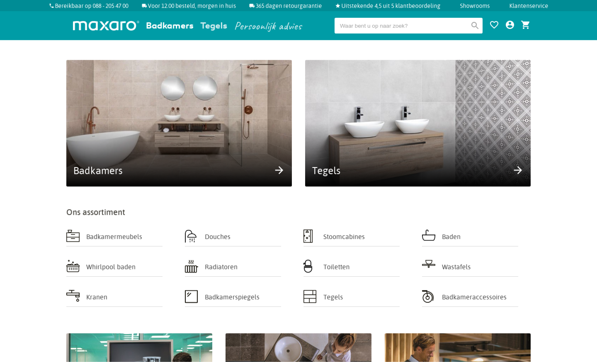
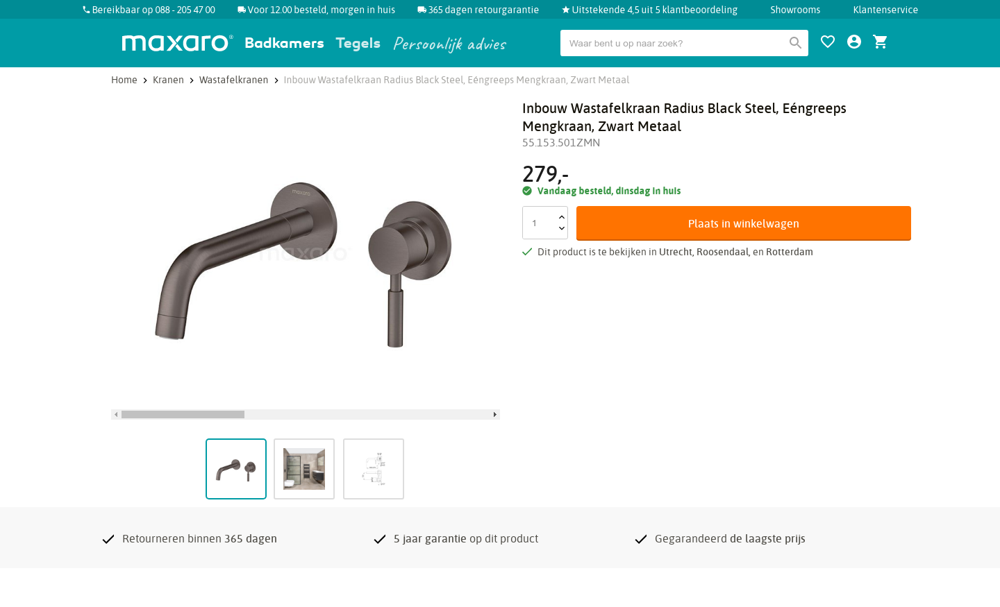

For this school project I had to clone a real website using HTML and CSS. The website also needed to be fully reponsive.
In the beginning I made a breakdown sketch where I was grouping certain elements with each other. After that I started with coding. This had been the third time I had to develop a website using HTML and CSS.
During this project I further developed my CSS skills where I learned new topics such as using custom properties, grid, and animations. On top of that I also learned to develop responsive website using em and media queries.